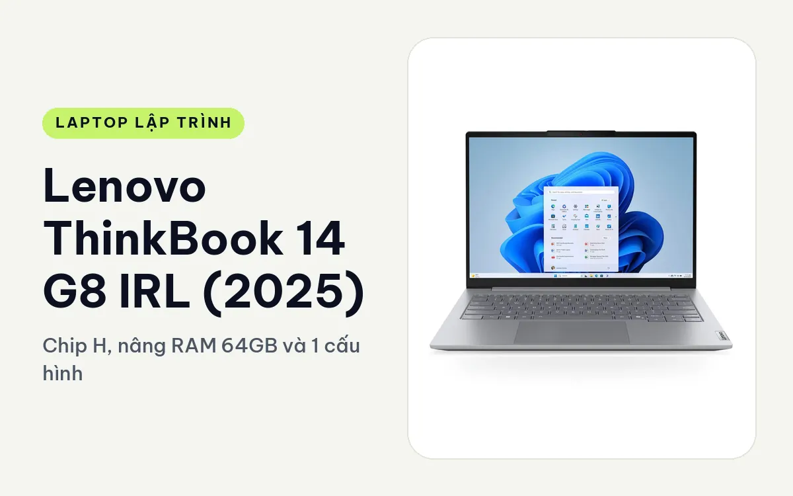
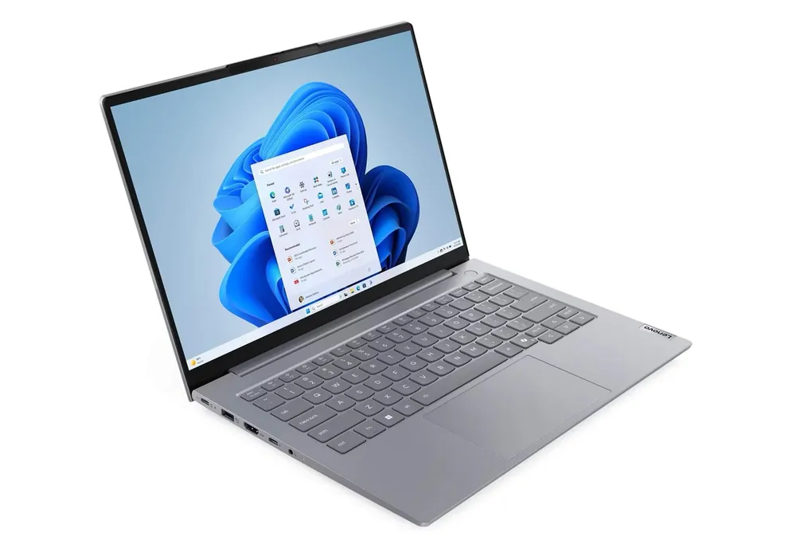
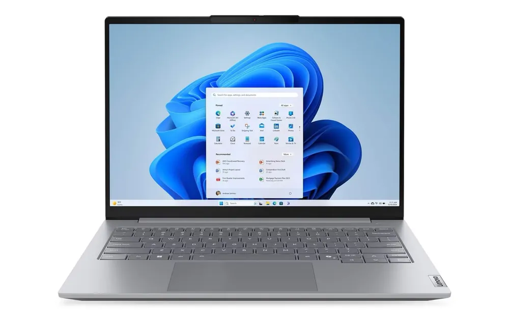
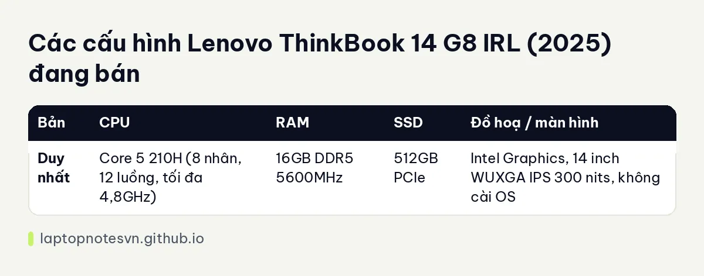

Lenovo ThinkBook 14 G8 IRL (2025) cho lập trình - Chip H, nâng RAM 64GB và 1 cấu hình

Lenovo ThinkBook 14 G8 IRL (2025) nằm giữa dòng máy học tập và dòng doanh nhân. Nó có vỏ nhôm, cổng Thunderbolt 4, cổng mạng dây và chip Core 5 210H dòng H với 12 luồng. Với người mới đi làm hoặc sinh viên cần một cỗ máy bền để dùng vài năm, đây là cấu hình dễ nâng cấp.
Cửa hàng bán 1 cấu hình, hàng không cài sẵn hệ điều hành (NO-OS). Bạn tự cài Windows hoặc Linux, và với dân code thì đó thường là ưu điểm.
Thiết kế nửa nhôm nửa nhựa
Mặt trên làm bằng hợp kim nhôm màu Arctic Grey, phần đáy là nhựa PC-ABS. Cách làm này giữ máy nhẹ mà vẫn cứng khi bấm phím. Trang mô tả cũng ghi đáy nhựa làm máy kém cao cấp hơn khi chạm vào, nên đừng kỳ vọng cảm giác như các dòng ThinkPad đắt tiền.

Màn hình 14 inch IPS WUXGA (1920 x 1200), tỷ lệ 16:10, chống chói, 300 nits, chứng nhận TÜV Eyesafe. Không có tuỳ chọn 2K hay 4K, và 300 nits đủ cho trong nhà. Bàn phím có đèn nền, hành trình sâu, phản hồi rõ, hợp với người gõ code nhiều giờ liền.
Cổng kết nối khá đầy đủ: USB-A, USB-C, Thunderbolt 4, HDMI, Ethernet và khe thẻ SD. Wi-Fi 6E và Bluetooth 5.3. Có cổng mạng dây là điểm tiện khi làm việc ở văn phòng hoặc kéo dữ liệu từ máy chủ nội bộ, và Thunderbolt 4 cho phép nối dock hoặc hai màn hình ngoài.
Gọn nhưng pin không dài
Kích thước 313,5 x 224 x 17,5mm, nặng từ 1,36kg. Pin 45Wh, trang mô tả ghi khoảng 6 đến 8 giờ làm việc tùy mức độ sử dụng, tức đủ cho một buổi nhưng khi code nặng bạn nên mang sạc theo. Sạc nhanh qua USB-C được khoảng 50% trong chưa tới 30 phút.

1 cấu hình đang bán
| Bản | CPU | RAM | SSD | Đồ hoạ / màn hình |
|---|---|---|---|---|
| Duy nhất | Core 5 210H (8 nhân, 12 luồng, tối đa 4,8GHz) | 16GB DDR5 5600MHz | 512GB PCIe | Intel Graphics, 14 inch WUXGA IPS 300 nits, không cài OS |
Bản Core 5 210H, 16GB, 512GB, không OS
Chip H với 12 luồng là điểm khác biệt so với máy chỉ có 6 luồng. Biên dịch C++ hoặc Rust, chạy test song song, build một dự án Java hoặc .NET cỡ vừa đều nhanh hơn. Code web, backend, script dữ liệu, notebook phân tích cũng thoải mái. Docker với vài container (database, cache, API) vẫn nằm trong khả năng của 16GB, miễn là bạn không mở thêm máy ảo nặng.

Mặt trái là máy không có GPU rời. Huấn luyện mô hình, dựng 3D hoặc chạy game nặng không thuộc phạm vi của nó, và Android emulator thì sẽ ì ạch với đồ hoạ tích hợp. Bạn có thể bù bằng thuê GPU đám mây hoặc debug trên điện thoại thật.
Điểm mạnh dài hạn là khả năng mở rộng. Theo trang mô tả, RAM lên tới 64GB và lưu trữ tối đa 2TB. Khi dự án lớn dần, bạn nâng RAM thay vì đổi máy, việc mà các máy RAM hàn không làm được. Bạn nên nhờ cửa hàng xác nhận loại khe RAM và số khe SSD trước khi mua linh kiện.
Gợi ý cách dùng cho từng giai đoạn
Năm đầu đi làm, bạn thường chạy một IDE, trình duyệt và vài dịch vụ cục bộ. Bản này đủ cho việc đó với 16GB. Sang năm hai, khi dự án có thêm database, hàng đợi tin nhắn và công cụ giám sát, bạn có thể nâng RAM lên 32GB mà không phải đổi máy.
Vì máy không cài sẵn hệ điều hành, bạn có thể cài Ubuntu hoặc Fedora ngay từ đầu để đồng bộ với môi trường máy chủ. Nếu muốn dùng Windows, cần chuẩn bị bản quyền và USB cài đặt. Bạn nên kiểm tra driver Wi-Fi và cảm biến vân tay (nếu cần) trên bản Linux mình chọn trước khi dùng chính thức.
Trackpoint là chi tiết nhỏ của dòng ThinkBook mà dân gõ phím thích, vì bạn điều khiển con trỏ mà không phải rời tay khỏi hàng phím giữa. Làn hơi nóng khi build dài cũng nằm trong mức chấp nhận được, nhưng đặt máy trên mặt phẳng thoáng sẽ giúp quạt chạy êm hơn.
Nên mua khi nào
ThinkBook 14 G8 hợp với người cần chip mạnh hơn IdeaPad, thích Linux, hay dùng dock hai màn hình, và muốn máy đồng hành lâu nhờ nâng cấp được. Nếu ngân sách chặt hơn và việc học chỉ ở mức cơ bản, xem bài Lenovo IdeaPad Slim 3 14. Để chọn dung lượng RAM nên nâng lên, đọc bài RAM cho lập trình viên.
Chi tiết hàng có tại Lenovo ThinkBook 14 G8 IRL (2025).
Đăng ngày 08/11/2026